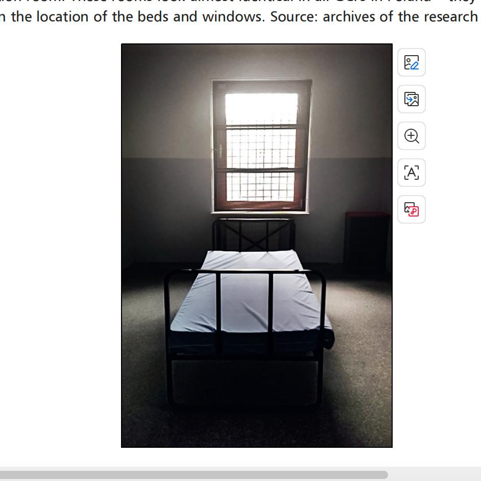

Nine Days in Suspended Limbo: The Material Reality of Detention
Before defining any technical abstraction, we anchor our inquiry in historical reality. In May 2019, inside the Guarded Centre for Foreigners (SOdC) in Poland, nine official Border Guard memorandums recorded a young woman's acute physical and psychic crisis[cite: 10, 15].

Figure 1. Architectural layout of an isolation room in Polish guarded centers (showing the bare iron bed and barred window. Source: Research Archives / Chwieduk, 2022)[cite: 10, 15].
How Voyant Tools Solved the Archival Dilemma
In traditional reading, these 1,246 Polish words seem like disconnected disciplinary notes[cite: 10, 15]. When imported into Voyant Tools, algorithmic distant reading exposed the underlying institutional architecture: out of 51 terms appearing three or more times, Voyant automatically sorted the vocabulary into four polarized systemic categories[cite: 10, 15]:
Depersonalized institutional agents[cite: 10, 15]:
First-person supervisory verbs[cite: 10, 15]:
Surveillance enclosures[cite: 10, 15]:
Frictional material contact points[cite: 10, 15]:
Through Voyant’s CorpusCollocates module, the word "umieszczona" (the detainee) correlated directly with "śmieci" (rubbish, 5×) and "toalety" (toilets, 4×)[cite: 10, 15]. Voyant provided mathematical evidence that the institution's memos erased her inner agony, categorizing her trauma merely as an infraction against hygienic order and physical security[cite: 10, 15].
What is Voyant Tools? Agile Hermeneutics & Enhanced Reading
Voyant Tools is a free, web-accessible suite of in-browser text analysis environments designed to foster dynamic scholarly interpretation[cite: 10, 15]. It does not aim to replace human reading; rather, it invents a computational companion for exploring, querying, and illuminating textual evidence in real time[cite: 10, 15].
“• Voyant is designed to work 'just in time' on any online or uploaded text. ... It combines the capabilities of personal-computer-based pre-indexing tools, such as TACT, with more accessible Web-based tools that can find text and create indexes in real time.”
“• Voyant is designed to fit into the research cycle flexibly. It can export a panel of evidence that can be easily embedded into an online essay just as one can embed a YouTube video into a blog entry.” — Hermeneutica, Chapter 1, p. 11[cite: 10, 15]
What Technologies Were Used? The Digital Architecture
Instead of viewing code as an intimidating black box, think of Voyant as a four-story intellectual building, translating human speech into interactive architecture[cite: 10, 15]:
What it does in plain words: This is the interactive dashboard you touch with your mouse[cite: 10, 15]. Sencha Ext JS creates draggable, resizable windows, while D3.js paints living word clouds (Cirrus) and trend charts that move whenever you click[cite: 10, 15].
What it does in plain words: The heart of the machine[cite: 10, 15]. When you drop a book or PDF, Apache PDFBox tears the text out, and Apache Lucene creates a lightning-fast dictionary index in milliseconds so you can search through millions of words instantly[cite: 10, 15].
What it does in plain words: Stanford CoreNLP automatically detects who is a person and what is a place (building social networks in RezoViz)[cite: 10, 15]; MALLET discovers hidden themes across thousands of articles without human intervention[cite: 10, 15].
What it does in plain words: Voyant's cutting-edge environment, Spyral, lets you write an essay and run live text calculations right inside the paragraph, creating the ultimate "hybrid scholarly essay"[cite: 10, 15].
What Was Their Agenda? Human Intelligence in the Age of AI
Who is Responsible? Funding, Institutions & The Living Consortium
Precedents in Canadian text concordancing (PRORA, TACT, HyperPo)[cite: 10, 15]. Geoffrey Rockwell and Stéfan Sinclair launch exploratory experiments within the TAPoR laboratory at McMaster University[cite: 10, 15].
Major research backing from SSHRC (Social Sciences and Humanities Research Council of Canada) and CFI (Canada Foundation for Innovation)[cite: 10, 15]. Co-developed between the University of Alberta and McGill University with lead programmer Andrew MacDonald[cite: 10, 15].
Following Prof. Sinclair’s passing, the Voyant Consortium was established to safeguard open-source continuity[cite: 10, 15]. Supported by the Digital Research Alliance of Canada and the national LINCS Project (voyant.lincsproject.ca)[cite: 10, 15].